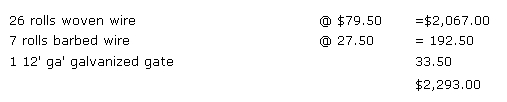

A good fence, farmers say, should be "horse high, bull strong, and pig tight". But as Jim Fairfield-who lives on a family homestead in Virginia-points out, that can be an expensive proposition these days. Jim then lists ways in which a modern subsistence farmer can put up just as much fence as he needs at a price he can afford.
I built my first fence 10 years ago, and it's still standing barrely. Had I used proper equipment and known how to go at Ire business, however, that prematurely useless enclosure could have done its job for another 30 years.
Easy as it may look to set posts and string wire, there's usually a science to the job a science I've been learning from Ay neighbor, Bill Deavers. Deavers builds a good fence. He caught to. He's been at it for 35 years. "If I haven't learned come along the way," says Bill, "I been wasting my time. Why, found out something new just last week. If those steel companies keep putting up the prices, though, I'll be right back to making rail fences again."
OLD TIME FENCES
As Bill Deavers implied, there do remain a few ways to enclose land without buying wire at today's prices. The trouble is that many farm plots no longer contain the primeval resources you need to build some of the best early American arm enclosures.
Rail or snake fences, for instance, look roughly like interlaced fingers and are held up by the angle at which the ends of he rails overlap, so that the finished fence runs in a zigzag. A split rail post is then sometimes driven on either side of each meeting point to give the structure added stability. As you can imagine, this uses up hewmongus quantities of whole or split young trees. If you're clearing away a patch of locusts or, cedars anyway, however, the trunks can save you a bundle in woven wire fencing.
Old-timey stone walls-to use another example-weren't so ouch fence as the handiest means of relocating rocks that kept surfacing to the plow (on land that might better have remained permanent pasture). If you've bought a place with a stone fence around it, then, you most likely won't find the enclosure -all enough to turn cattle. Some farmers with more borrowed -money than sense simply build a new fence inside the Ad but as Bill Deavers says, "It's not the dollars you make, It's what you get to keep that counts."
There are probably half a dozen ways of adding height to a stone fence. The simplest improvement seems to be locust rails driven into the ground parallel to the old wall's face leaning back against the rock for lateral as well as vertical support. The addition of one or two strands of barbed wire stretched to sturdy end posts will then discourage even the climbingest heifer.
WOVEN WIRE FENCING
I hope some day that Bill and I can build a rail fence across the top of the hill here at Glencairn. We have enough scrub trees to do it. In the meantime, though, there's a perimeter fence line around our 34 acres that's horse high (if not hog tight).
The woven wire that encloses Glencairn is heavy duty Red Brand, made by Keystone Steel of Peoria, Illinois. Because we intend to, put sheep on the place after our horses, I chose 1047-611 fencing: that is, 10 horizontal bars, 47 inches high, with vertical stays 6 inches apart and No. 11 wire in the strands and stays. The bottom and top strands are heavier 10 gauge.
A less expensive livestock enclosure uses 12-inch stay spacing. Sears advertises the alternative as sheep and cattle fencing with "extra wide spacing between line and stay wires to keep sheep from getting their heads caught". Don't believe it! The Madison Avenuese translates as, "if you have sheep, they will stick their heads through this wider mesh. We think it's wide enough that they won't slay stuck." The problem with woollies, though, is that they're just smart enough to get, into trouble and dumb enough to forget how to get out. We've had 'em hung up in wide-spaced wire time and again. Although Glencairn's perimeter is fenced with 47-inch-high, heavy duty wire, I did use some lighter and lower 939-12-11 (9 bar, 39 inches high, with vertical stays 12 inches apart, and No. 11 wire throughout except for heavier 10 gauge in the top and bottom strands) fencing around a one acre pasture for our Shetland mare and her foal. This "economy" fence kept tire ponies in, all right, but it didn't keep our neighbor's heifers out. When the half-grown cattle got to high tailing around his pasture in fly season, 39 inches didn't pose much of an obstacle to them at all.
Why heifers have to climb out over the same barrier they jumped coming in is one of country life's little mysteries but that's what they do. They'll bunch up against the fence and push it over until one of them panics and starts to clamber. Such action can bend steel posts, pop staples, and snap even the heavy No. 10 wire along the woven fence's top.
All of which goes to show that the whole height versus cost business is a tricky question. "The man I'm building fence for now," Bill says; "bought 39-inch wire to save money. We're raising it six inches off the ground and running the top barbed wire a couple inches higher than usual. I told him his cows'll get their heads through and be cut up bad but with prices the way they are, he says he can't afford 47-inch. I'd string two strands of barb if I was him, but that near puts the cost up to what he's trying to save."
Bill's neighbor isn't the only one to be worried about the economics of fencing. This is being written in the fall of 1974, and in our area of the Shenandoah Valley-current prices for wire are running about 100 percent higher than they did in 1970 (if you can get any the supply is short). Although my figures will probably be out of date by the time you read this, they'll give you a rough idea of what to expect.
Standard 1047-6-11 woven wire costs $79.50 for a 20-rod roll (330 feet), while the shorter 939-6-11 is $69.75.. The cheapest fencing of this type is lightweight 939-12-12 1/2 at $40.25 plus tax. When it comes to mail order versus home town dealers, Sears' 10476-12 1/2 at $49.95 plus shipping charges-compares to similar wire at $46.25 locally. In my case it turns out to be considerably cheaper to buy "next door": A. 20-rod roll of wire weighs 186 pounds and that adds up to a lot of freight charges by mail order.
(Inflation is an editorial nightmare. I can only tell you that, as of April 1975, local prices for woven wire are roughly $15.00 higher per roll than those given above. High-quality treated posts, guaranteed for 40 years, run a dollar or so higher apiece than the figures in the following section of this article. Prices for gates are about the same as those Jim quotes, and the cost of barbed wire is also comparable. It's essential to check with local dealers if you're planning to put up a fence and you'd better take along some smelling salts if you faint easily.-MOTHER.)
COMMERCIAL POSTS
Whatever folks pay for their wire, they'll most likely string it to soft pine posts which have been treated with salt and pentachlorophenol forced into the debarked wood under pressure. This process gives up to 30 years of protection against the homesteader's major fencing problems: rot and termites.
The treatment works only when it's done right, of course, and in our area-where demand for fence supports is heavy smog processors skimp on the job. I own posts in which the chemical is barely skin deep. This trick isn't easy to spot, because timbers are pressure-treated in precut lengths and the penta solution penetrates the end grain to some depth. Thus the larceny of the makers shows up only when several inches of wood are trimmed away. It wouldn't hurt to check by cutting four inches off one post in any lot you buy.
Post prices are subject to demand, and are high around here at present because local farmers have been too busy to cut log, for fence building and the supply is short. Some dealers will dicker on quantities, however, and I know one local man who knocks off a nickel a post on strapped bundles of 45.
The following are representative prices of No. 2 Southern (or yellow) pine posts:
GATES
"Boughten" gate;; ace expensive, IN our area the wooden type costs about the same as galvanized steel and seems to be more popular . with farmers, who like its weight and durability. A wooden gate is a heavy burden, though, and hinges-like knees and knuckles-tend to bind up with age. I'll be darned if I see why steel won't last just as long.
The following are current prices for galvanized gates in our parts:
FENCING COSTS
The bill for running a 11 fence around a 10 - acre meadow can add up pretty rapidly. Figure it out. The circumference of an acre (44,000 square feet) is just under 840 feet, or 51 rods. If you set posts at 12-foot intervals you'll need 70 per acre. For 10 acres, that's 700.
Next throw in four corner and two gate posts, plus 10 braces (run horizontally between each corner upright and the next line post on either side for each corner and on both sides of a gate), and here's what uprights for that 10-acre fence line will cost
Then there's the wire: The circumference of 10 acres-510 rods requires 26 rolls of fencing (at 20 rods per roll). If you're using 10476-11, you'll be stringing one strand of barbed wire above the woven (to keep livestock from leaning on the fence) and at 80 rods to the roll of barb, that figures out to 7 trolls. Add a gate, and you have the following:
The combined cost of posts, wire, and gate for the 10-acre fence line then -as you can see-comes to $3,638.90 which means that around and here, as of late 1974, a good enclosure for cattle, sheep, or horses will run you a jolting $363 per acre.
HOMEMADE POSTS
What I've been describing so far is, of course, the new Cadillac fence. How about a used VW? There's not much you can do about the price of wire but you can save a lot on posts by cutting and treating your own.
Cedar, pine, juniper, the maples, and most softwoods will make usable supports for woven wire fencing if each tree's core is solid and the timber is treated right. If you have locusts growing on your place, though, you are blessed indeed. "Tough as a pig's nose," Bill Deavers claims. "I never soaked a locust post, don't need to. Some my daddy put in when I was a boy are still strong."
Locust wood is heavy, solid, and dense in grain a quality that seems to frustrate termites. Even a chain saw takes its time chewing through the heart of such a tree. I've cut into some ancient locust posts pulled out of old fences, and-while they looked wretched on the outside the centers were tough and untouched by borers. The wood will hold a staple, too if, you can drive one in without breaking it in the middle.
The best time to collect and bark posts is when you're clearing land. (That's a good chore to do during the winter, when the sap is down which will make your posts last a lot longer and when you can move around in the brush a lot easier.) All the wood you cut will be useful and after you've set aside timber trees and kindling brush, you should have a good supply of stove wood and plenty of fence supports left over.
Save every solid cored tree with a diameter of over three inches inside the bark. Straight lengths are great, but even a crooked as around's leg post is useful if it has one straight plane to nail wire to. Trunks three to five inches thick (after barking) should be cut seven feet long for line posts. Heavier timbers up to eight inches in diameter make good corner, gate, and reinforcing posts and should be sawed into eight foot lengths.
Posts can be used immediately after they're cut when you're in a` hurry. If you have time to season the trunks, however, pile them on a layer' of brush to keep them up off the ground. (Crisscross the layers to let air circulate and speed up the drying.) Bill likes to let his supply of posts season at least a year, and whenever he has a chance he adds new timbers to the stack aging in his yard. You'll find the fence supports much easier to peel if you can follow Deavers' system.
PEELING
Yes, you really do have to remove the bark from fencepost's not from the whole length, but definitely from two areas. One is the wire side of every upright, which must be bared so that the staples can grip solid material. The other is 'the bottom three feet of each line post (four feet in the case of a corner post). If you don't peel this lower end before you soak the wood, you'll waste a lot of preservative. Also, bark left on at ground level provides a damp, lightless "welcome mat" for boring insects and rot. Be sure that all your wooden supports are stripped to several inches above the point to which they will be buried.
A sharp hatchet or machete is hefty enough for the bark-peeling job. Any heavier tool, in fact, is going to be much too heavy after the first 20 or so posts.
Incidentally, you'd better know which end of each post is which before you begin peeling. According to Bill, "The lower end, nature's way, is the one that should go in the ground. The branch knots won't rot as easy that way.
"Look at a peeled post. You can tell which end is up by the rings around a knot. They're tight on the up side and sag on the down side. Put your posts in right the first time and they'll last 30, 40 years."
SPLIT POSTS
If you have more big-diameter logs than you need for corners, gates, and brace posts, you can split some of them sawmill by-products Ed and Ralph Stroop operate a sawmill on their daddy's place a mile below ours. They're as busy as they want to be, rough cutting timber to order and they also make a lot of good fenceposts out of odd pieces of lumber. If you live near such a small business, you might buy yourself into a bargain.
Sawmill by products, in general, are an inexpensive resource for the homesteader. We've used pickup loads of sawdust and bark chips for mulch on certain areas of our garden and flowerbeds.
Slab wood is good fuel, and usually cheaper by far than any other firewood. There's one serious drawback, however: Those outer slices of trees are pretty much bark, which contains more natural creosote than is good for a chimney.
into line posts. A trunk 15" across will give you four uprights that are just as good as "whole" round ones.
Here's how to split a log: Prop up one end of the timber on a chopping block. Then cut a cross-shaped notch with your chain or bow saw on the end of the trunk and start splitting with the help of several steel wedges and a maul or sledgehammer. Old axe heads have a much shorter taper than steel wedges, but make an acceptable substitute and are more often available at auctions or secondhand stores.
Pound your first wedge into the saw notch. Then, when the log starts to split, set another wedge as far along in the crack as the tip will fit. Drive both pieces of metal alternately, and as the split widens insert a third wedge. A couple more blows with the maul should do the job.
PRESERVATIVE TREATMENT
Treatment for protection against rot and termites is an essential step in the making of your own fenceposts. Don't be tempted to omit it. It's a mind-kicking experience to replace rotted out uprights a couple of years after you set them (especially when they have to be placed right against fence wire, where you 'can't get a good angle to dig straight holes).
Creosote, a low-cost wood preservative, is available in bulk from oil companies or farm supply houses. (Check several local outlets for the best price. We've run into some wild variations here in North Carolina including a retail figure of $3.11 per gallon, which is substantially lower than another dealer's bulk rate!-MOTHER.)
The following directions for the use of cresote come from the HAVE-MORE Plan:
Soft woods such as willow, soft maples, beech, and box elder will last only three to five years in the ground as fence posts. But you can make them last 20 to 25 years by boiling the lower ends in a steel drum of creosote. Keep the fire near boiling point for five hours, let fire go out, completely fill tank with creosote and let posts soak overnight.
In practice-if you intend to process several hundred posts, 10 or so at a time per 55-gallon drum I doubt that you'll want to boil them unless you have help to watch the fire. We've used two barrels at once and just soaked the ends of the supports in the chemical. It's a slow process but could be speeded up if you have a lot of drums around.
Another common wood treatment penta preservative is considerably more expensive. U.S. Plywood's Wood life (which contains 4.2 percent pentachlorophenol in solution) costs $4.95 a gallon retail and $2.00 a gallon in bulk, and you'll need around 20 gallons for 1,000 board feet of wood. The manufacturers recommend that well seasoned and peeled posts be soaked in the product for 48 hours.
NOTE: This is Part I of a two-part article. The second section-which describes how to plan and build a fence-will appear in MOTHER NO. 35.
SAWMILL BY PRODUCRS
Ed and Ralph Stroop operate a sawmill on their daddy's place a mile below ours. they're as busyas they want to be, rough-cutting timber to order... and theyalso make a lot of good fenceposts out of oddpieces of lumber. If you live near such a small business, you might buy yourself into a bargain. Sawmill by products, in general, are an inexpensive resource for the homesteader. We'veused pickup loads of sawdust and bark chips for mulch on certain areas of our garden and flowerbeds. Slabwood is god fuel, and usually cheaper by far than any other firewood. There's one seriuos drawback, however: Those outer slices of trees are pretty much bark, which contains more natural creosote thamis good for a chimmy
|
|
|
|
|
 |
|
|